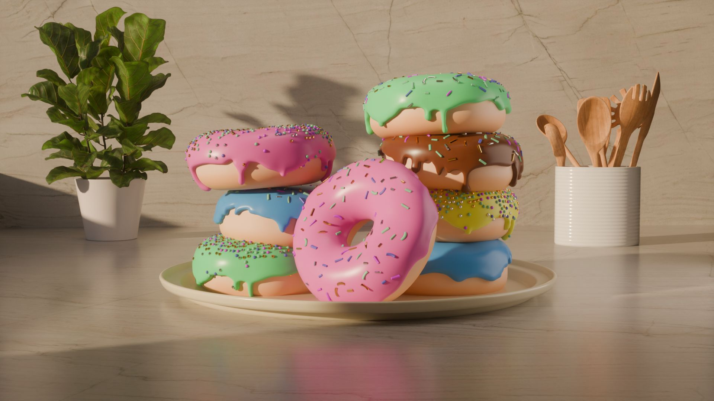
I first started off with the basic Blender Donut course-- it is a hefty course which walks you through the ins and outs of every part of the software.
I run a minecraft server for my friends, and I like to update the server icon every once in a while with some new 3D art. It used to be weekly, but now it's more spontaneous.
The name of the server is "Cool SMP 5". This is the 5th world we've done. SMP stands for "Survival Multi-Player", because it's a Minecraft survival world. "Cool" stands for cool. Because my friends are cool.
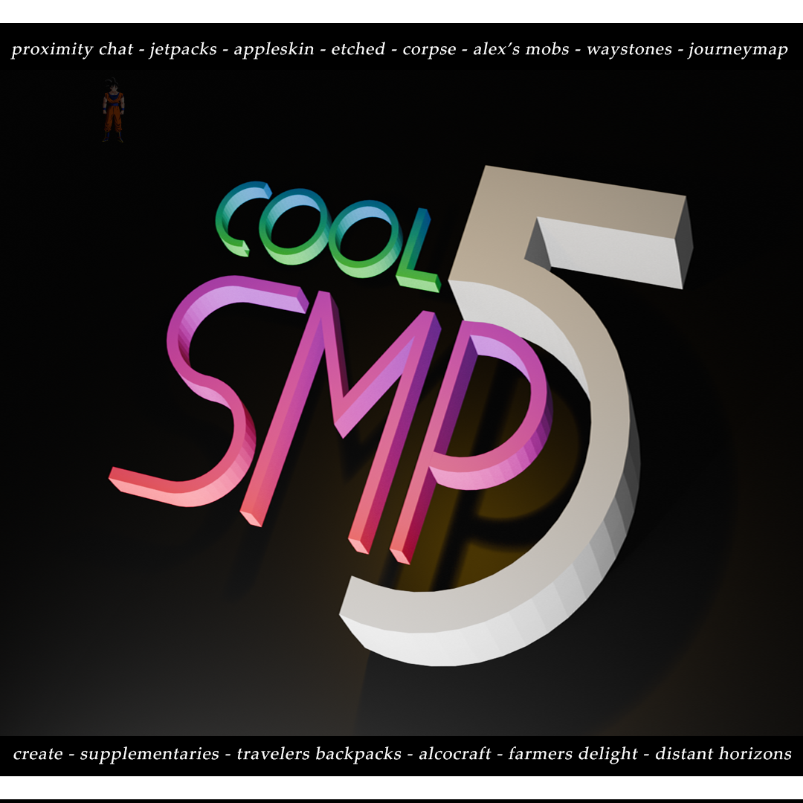
This was the first server icon I made-- you can tell it's a little rough around the edges. I dont know why uh, that one anime guy is there...
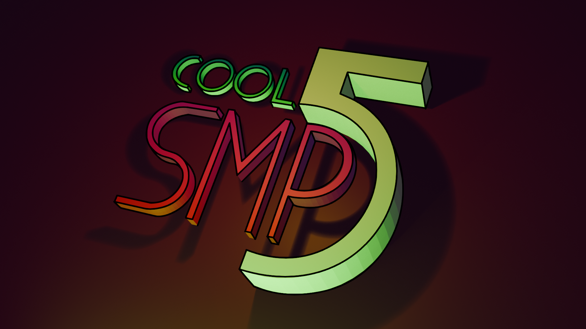
Around this time I had finished watching Daredevil on Netflix, and so I took some inspiration from the lighting and color scheme in that show.
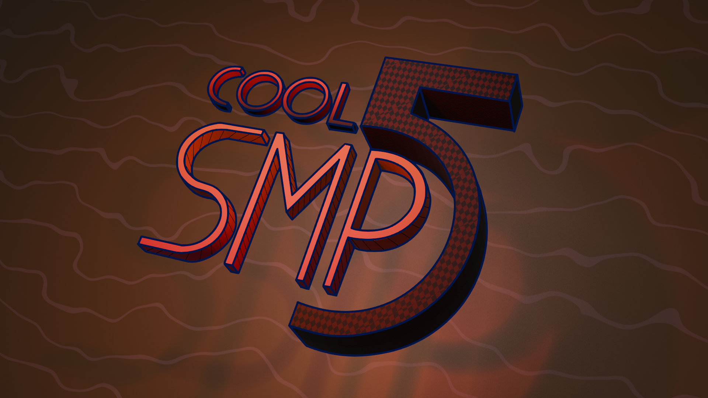
The cave icons! One of the mods on the server added a bunch of fancy caves. One of them was the Forlorn Hollows, a sort of "dark/evil" cave populated by a weird mole cult. I don't know. It's weird. I tried to theme the next couple server icons after specific caves on the server. This icon was for the Forlorn Hollows.
This was where I started messing around with textures.
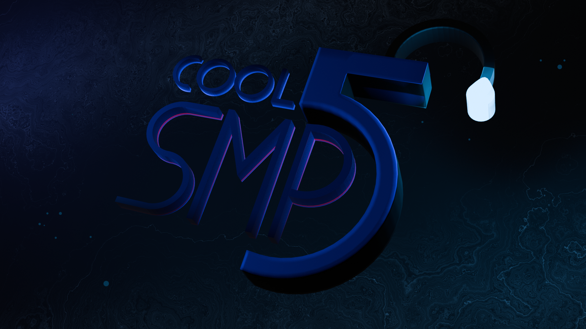
This one was themed after water caves, "the Abyssal Depths" as they're called. I had a lot of fun playing around with texturing and lighting in this one! It looks pretty good.
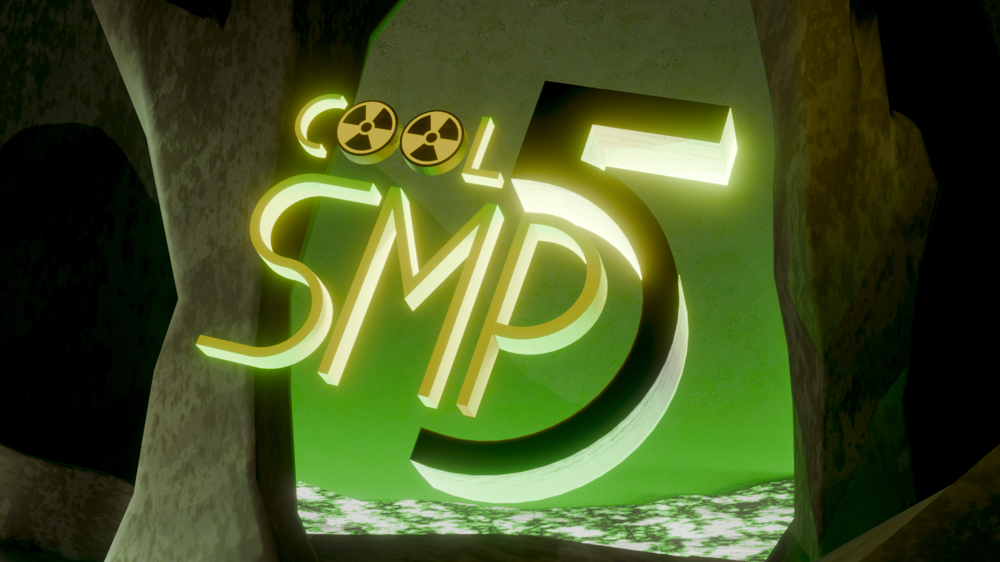
The Toxic Caves had lots of uranium-nuclear-high-energy theming going on. I tried to replicate that here with the green lighting and nuclear symbol. This is where I began experimenting with more advanced backgrounds. Additionally, I began compositing my work-- you can see some glare on the logo. Personally, I like the water one more, but I'm still happy with this.
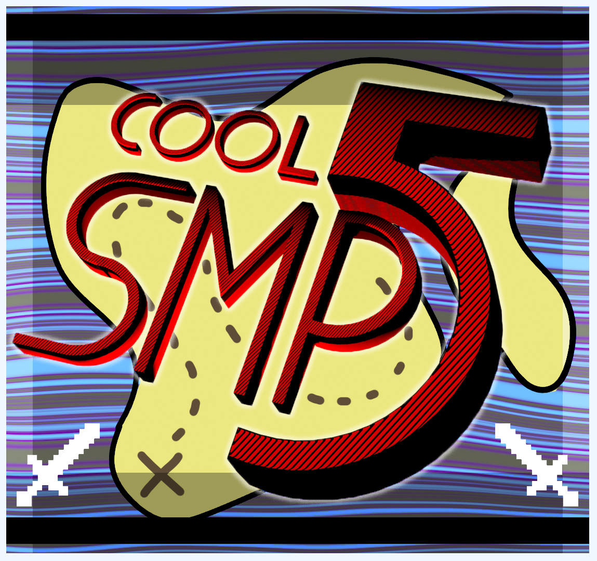
I tried doing a big event on the server, where I organized like a whole "battle island" thing. The timing didn't work out, but I made this neat server icon for it. I sort of grew lazy with these two and started slapping things together. This doesn't look too bad though.
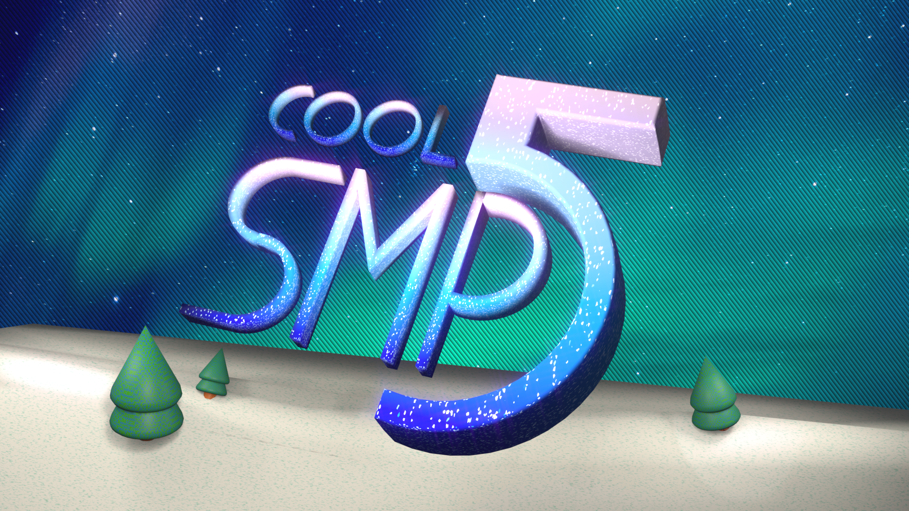
Nothing really happened for a while, but I wanted to make something winter themed. So I tried to make this winter themed server icon.
This one is my least favorite; its just not framed very well and you can see the lack of care. Why is the "L" all messed up?!?
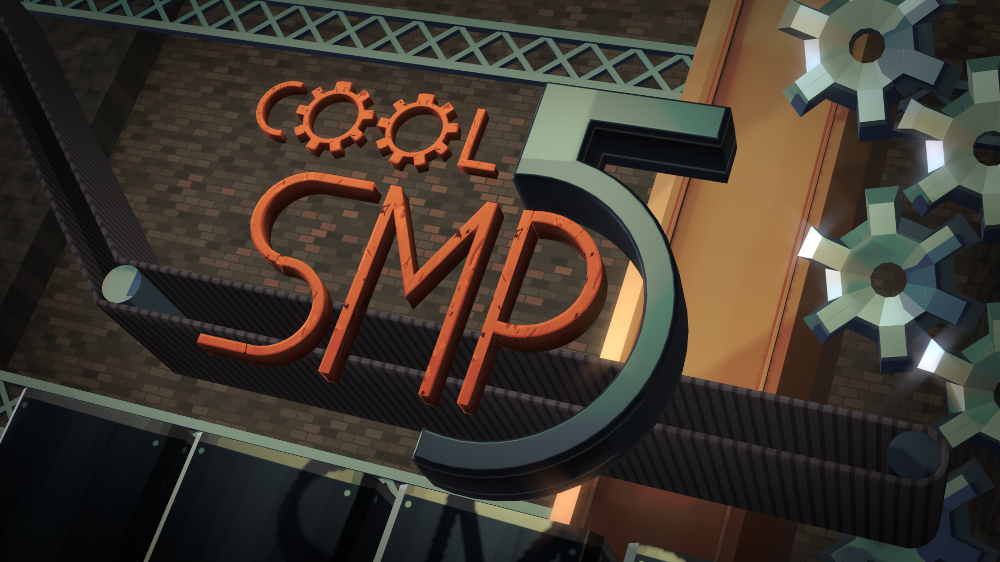
This one looks great! A lot more attention to detail went in designing the background, and the colors look very nice. For this server icon, I learned texture painting, as well as further honed existing 3D art skills.
My favorite mod on the server is the Create Mod-- it allows me to engineer all sorts of factories and designs and machines. It's cool! So I made my server-icon reflect that.
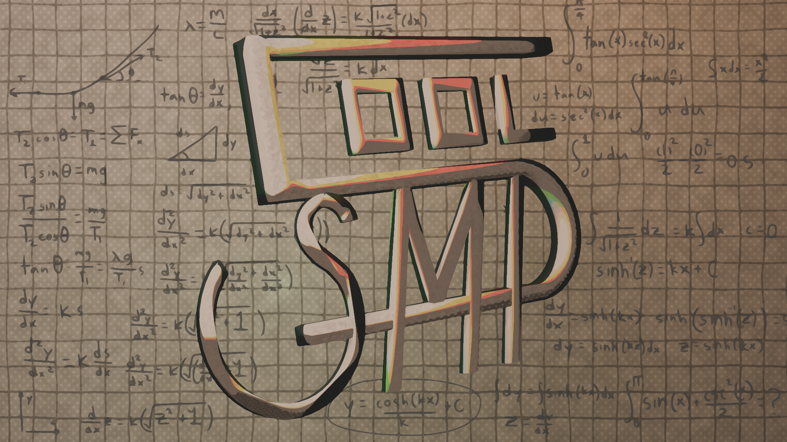
You may be wondering why the design is completely different. Well, I accidentally deleted the previous server-icon .blend file, so I had to redesign the whole thing. But it was fun! I like this design more anyways.
We recently did an overhaul on the server, adding "Create: Aeronautics" to the server, which is basically if Aerospace Engineering was in Minecraft.
I tried to make my server icon reminescent of engineering or physics diagrams. You can see the derivation of a catenary in the background!
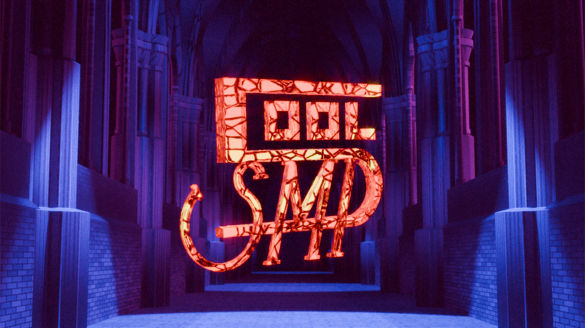
One of my friends was building a gothic cathedral on the server, which I thought was really cool. So I modelled and lit an entire gothic cathedral! Which was CRAZY. But fun.
I also followed a tutorial on simulating stained glass. This one is my most technically impressive work yet-- very fancy modelling and shading.
I sort of ran out of steam near the end, so I didn't texture the architecture very well. But the lighting and compositing makes up for that. Overall, I think this is my best server icon yet!